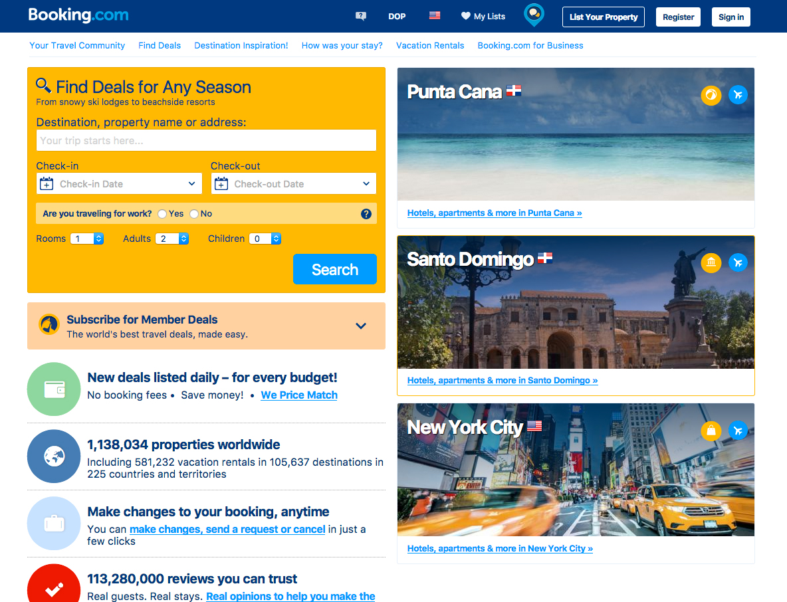
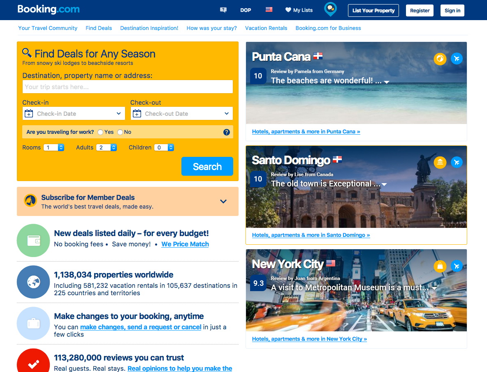
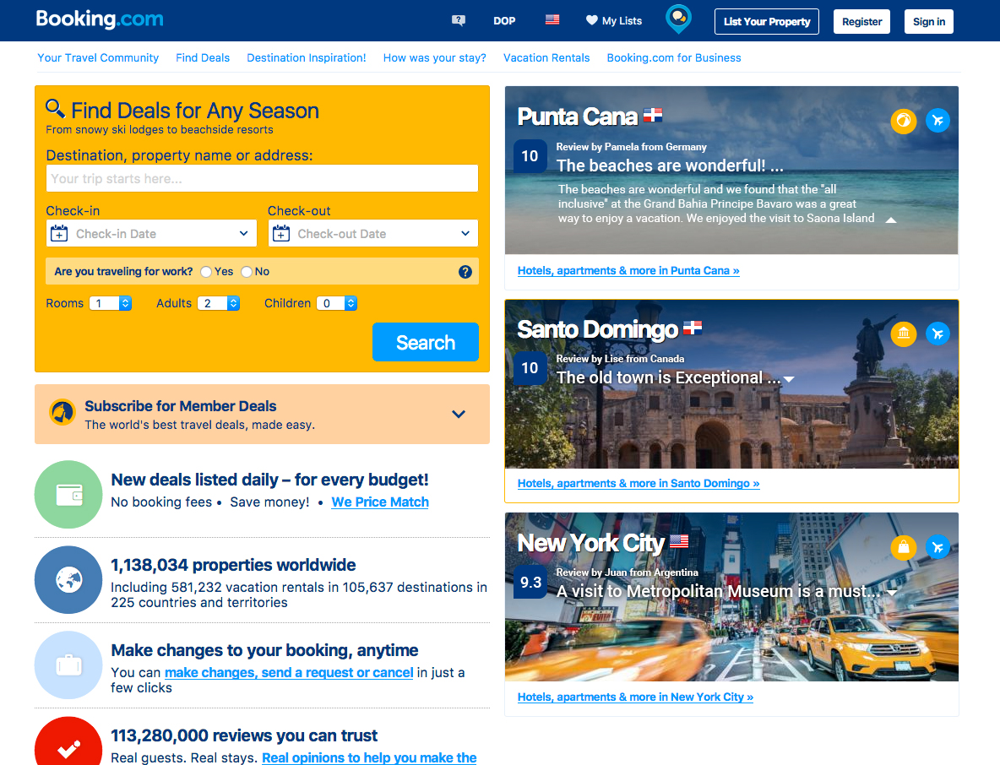

Presenting 4 ideas of actionable improvements that can be made to the site.
← Go backWhen buying a hotel there's always that feeling of uncertainty on the back of people's minds. They're asking themselves: Is this the right hotel for the kind of experience I want to have?
That's why when they don't know something about a place or a hotel, they ask to their relatives and friends. And go to places like tripadvisor to see what others think about that.
How can we help to reduce that fear, increasing confidence and improving conversions?
Bookings can increase if we can help consumers make the right decision leveraging the power of our social proof data.
Booking.com current state On the homepage, in the featured destinations section, we currently only present the name of the destination and a flag.
I propose to include reviews of those places from our database of 113 million of reviews
Users can expand the content of the review.
If the hypothesis is validated, Continue "milking the cows", go to next item and improve another part of the website.
If the hypothesis is not validated, iterate or pivot. Reshape ideas. Try adding text-decoration:underline to the review title
If the results of test are uncertain, iterate. Reshape ideas